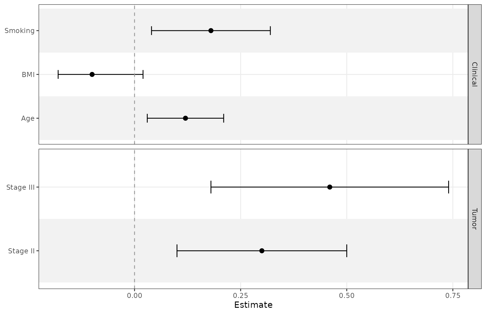
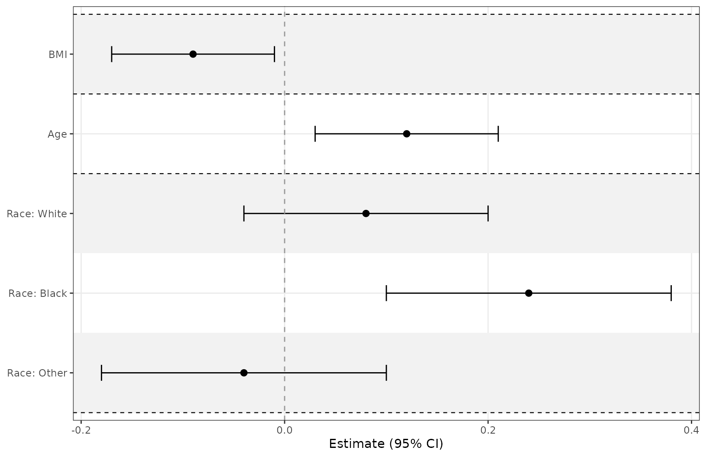
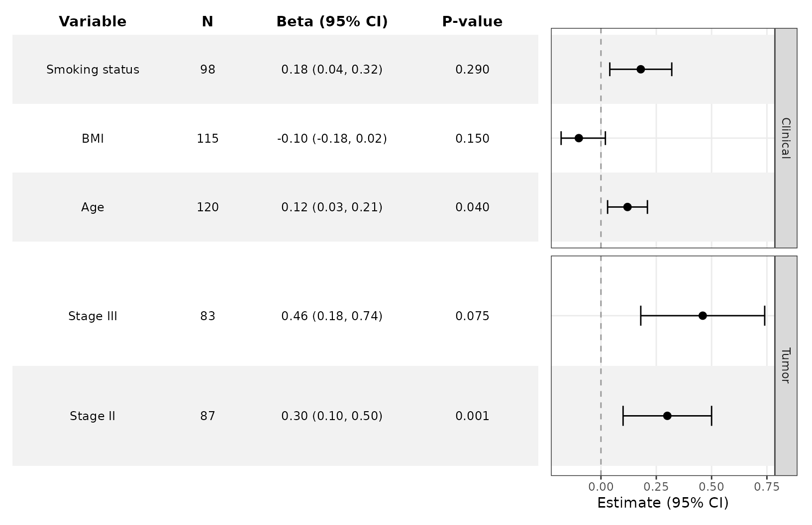
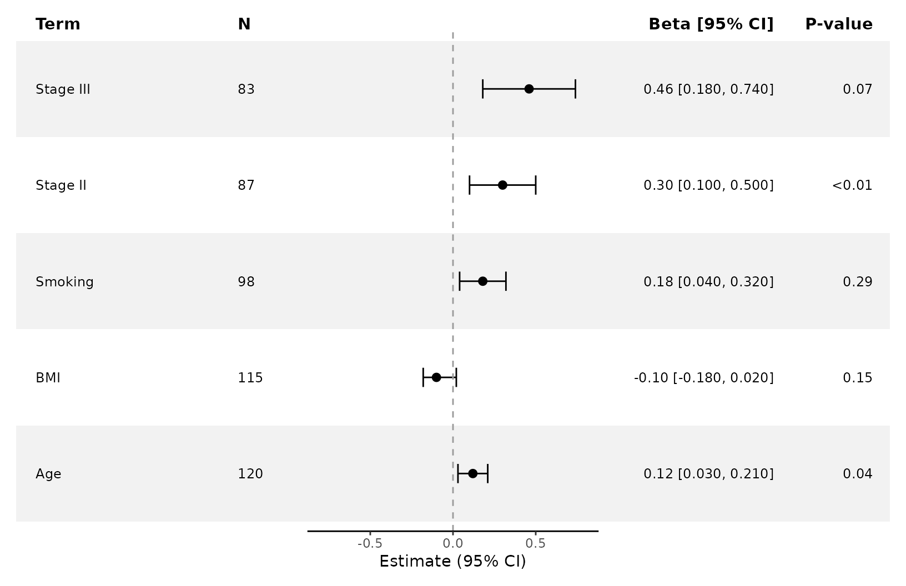
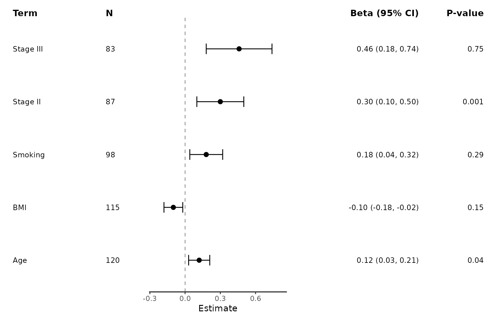
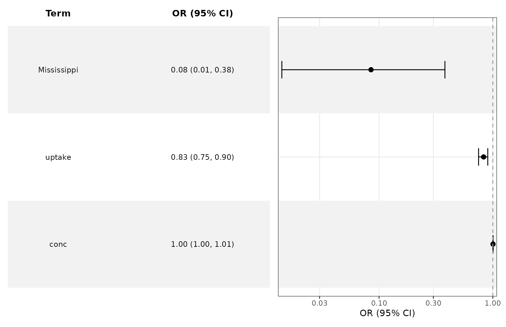
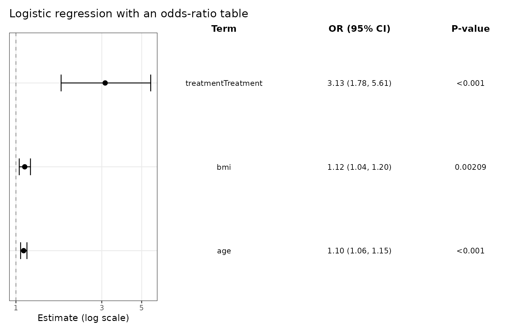
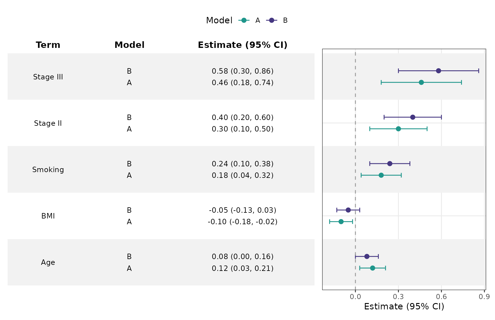
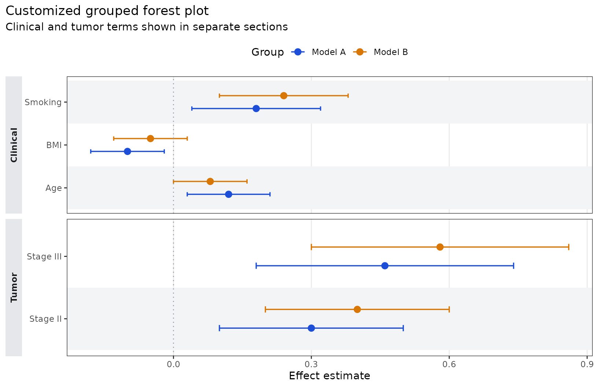

Customize Forest Plots and Tables
Source:vignettes/ggforestplotR-plot-customization.Rmd
ggforestplotR-plot-customization.RmdThis article focuses on grouped displays, separator lines, table
composition, and ggplot2 styling.
Base plotting data
coefs <- data.frame(
term = c("Age", "BMI", "Smoking", "Stage II", "Stage III"),
estimate = c(0.12, -0.10, 0.18, 0.30, 0.46),
conf.low = c(0.03, -0.18, 0.04, 0.10, 0.18),
conf.high = c(0.21, -0.02, 0.32, 0.50, 0.74),
sample_size = c(120, 115, 98, 87, 83),
p_value = c(0.04, 0.15, 0.29, 0.001, 0.75),
section = c("Clinical", "Clinical", "Clinical", "Tumor", "Tumor")
)Group rows and control strip placement
grouping creates section panels, and
grouping_strip_position controls which side gets the strip
labels.
ggforestplot(
coefs,
grouping = "section",
grouping_strip_position = "right",
striped_rows = TRUE
) +
ggplot2::labs(title = "Grouped forest plot with right-side strips")
Add separator lines around a multi-level variable
Use separator_group and separator_lines
when a categorical variable expands into several levels and you want
visible boundaries around that block.
race_coefs <- data.frame(
term = c("race_black", "race_white", "race_other", "age", "bmi"),
label = c("Black", "White", "Other", "Age", "BMI"),
estimate = c(0.24, 0.08, -0.04, 0.12, -0.09),
conf.low = c(0.10, -0.04, -0.18, 0.03, -0.17),
conf.high = c(0.38, 0.20, 0.10, 0.21, -0.01),
variable_block = c("Race", "Race", "Race", "Age", "BMI")
)
ggforestplot(
race_coefs,
label = "label",
separator_group = "variable_block",
separator_lines = TRUE,
striped_rows = TRUE
) +
ggplot2::labs(title = "Separator lines around a multi-level Race variable")
Add a side table
add_forest_table() is the simpler composition helper
when all summary columns should sit on one side of the plot. Add it
last, after the main plot styling, because it returns a patchwork
composition rather than a plain ggplot.
ggforestplot(
coefs,
grouping = "section",
n = "sample_size",
p.value = "p_value",
striped_rows = TRUE
) +
ggplot2::labs(title = "Left-side summary table") +
add_forest_table(
position = "left",
show_n = TRUE,
show_p = TRUE,
estimate_label = "Beta"
)
Use split tables
add_split_table() is better when term labels should stay
on the left and the formatted statistics should move to the right. Like
add_forest_table(), it should be added after any plot-level
styling.
ggforestplot(
coefs,
n = "sample_size",
p.value = "p_value",
striped_rows = TRUE
) +
ggplot2::labs(title = "Split table layout") +
add_split_table(
left_columns = c("term", "n"),
right_columns = c("estimate", "p"),
estimate_label = "Beta"
)
You can also specify split-table columns by position instead of name.
ggforestplot(
coefs,
n = "sample_size",
p.value = "p_value"
) +
add_split_table(
left_columns = c(1, 2),
right_columns = c(3, 4),
estimate_label = "Beta"
)
Plot odds ratios from logistic regression
For logistic regression models, use exponentiate = TRUE
so the x-axis is on an odds-ratio scale and the null reference stays at
1.
set.seed(123)
logit_data <- data.frame(
age = rnorm(250, mean = 62, sd = 8),
bmi = rnorm(250, mean = 28, sd = 4),
treatment = factor(rbinom(250, 1, 0.45), labels = c("Control", "Treatment"))
)
linpred <- -9 +
0.09 * logit_data$age +
0.11 * logit_data$bmi +
0.9 * (logit_data$treatment == "Treatment")
logit_data$event <- rbinom(250, 1, plogis(linpred))
logit_fit <- glm(event ~ age + bmi + treatment, data = logit_data, family = binomial())
ggforestplot(logit_fit, exponentiate = TRUE) +
ggplot2::labs(
title = "Odds ratios from a logistic regression model",
x = "Odds ratio"
)
You can attach a table here as well and relabel the estimate column for odds ratios explicitly.
ggforestplot(logit_fit, exponentiate = TRUE) +
ggplot2::labs(title = "Logistic regression with an odds-ratio table") +
add_forest_table(position = "right", estimate_label = "OR", show_p = TRUE)
Compare multiple estimates per term
The group argument is for multiple estimates on the same
row.
comparison_coefs <- data.frame(
term = rep(c("Age", "BMI", "Smoking", "Stage II", "Stage III"), 2),
estimate = c(0.12, -0.10, 0.18, 0.30, 0.46, 0.08, -0.05, 0.24, 0.40, 0.58),
conf.low = c(0.03, -0.18, 0.04, 0.10, 0.18, 0.00, -0.13, 0.10, 0.20, 0.30),
conf.high = c(0.21, -0.02, 0.32, 0.50, 0.74, 0.16, 0.03, 0.38, 0.60, 0.86),
model = rep(c("Model A", "Model B"), each = 5),
section = rep(c("Clinical", "Clinical", "Clinical", "Tumor", "Tumor"), 2)
)
ggforestplot(
comparison_coefs,
group = "model",
grouping = "section",
striped_rows = TRUE,
dodge_width = 0.5
) +
ggplot2::labs(title = "Comparing two model specifications")
Finish with ggplot2 styling
The returned object is still a normal ggplot until you
add a table helper.
ggforestplot(
comparison_coefs,
group = "model",
grouping = "section",
striped_rows = TRUE,
stripe_fill = "#F3F4F6",
zero_line_colour = "#9CA3AF",
zero_line_linetype = 3,
point_size = 2.8,
line_size = 0.6
) +
ggplot2::labs(
title = "Customized grouped forest plot",
x = "Effect estimate",
subtitle = "Clinical and tumor terms shown in separate sections"
) +
ggplot2::scale_colour_manual(
values = c("Model A" = "#1D4ED8", "Model B" = "#D97706")
) +
ggplot2::theme(
legend.position = "top",
panel.grid.major.y = ggplot2::element_blank(),
strip.background = ggplot2::element_rect(fill = "#E5E7EB", colour = NA),
strip.text.y.left = ggplot2::element_text(face = "bold"),
plot.title.position = "plot"
)